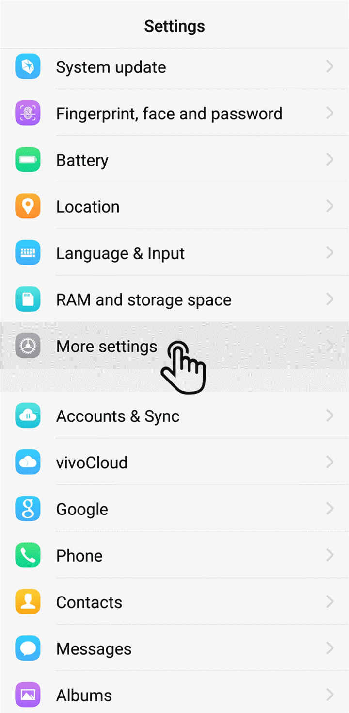
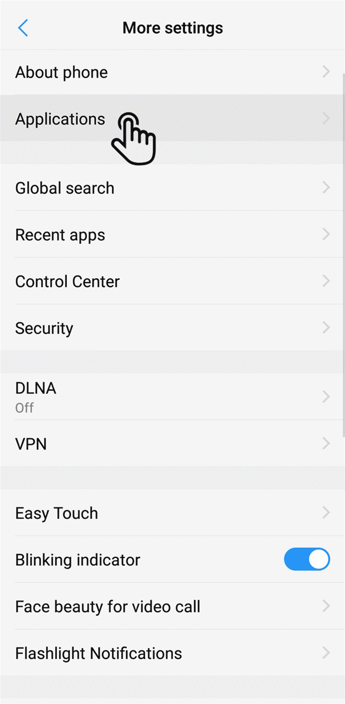
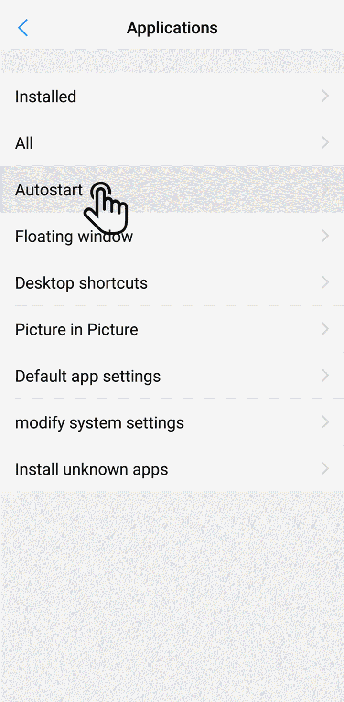
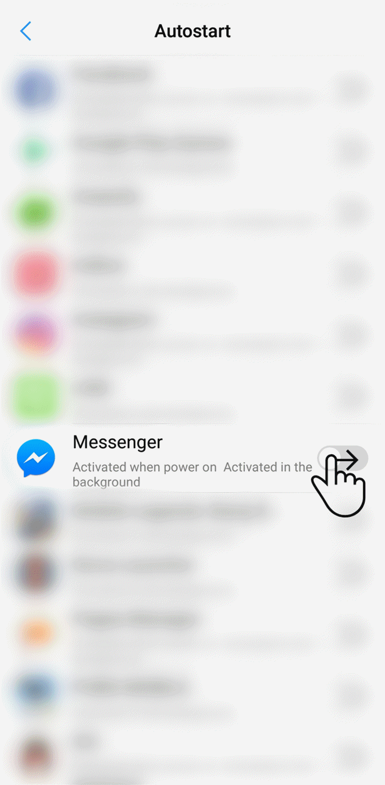
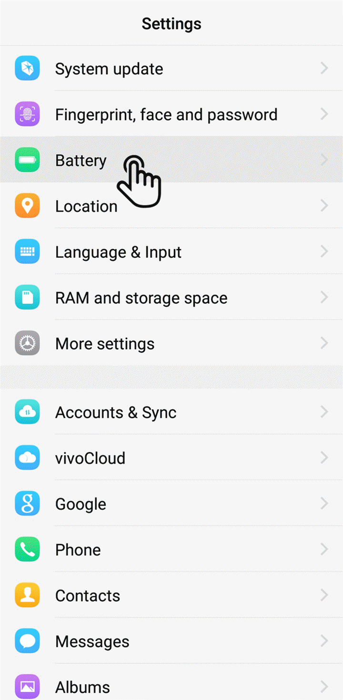
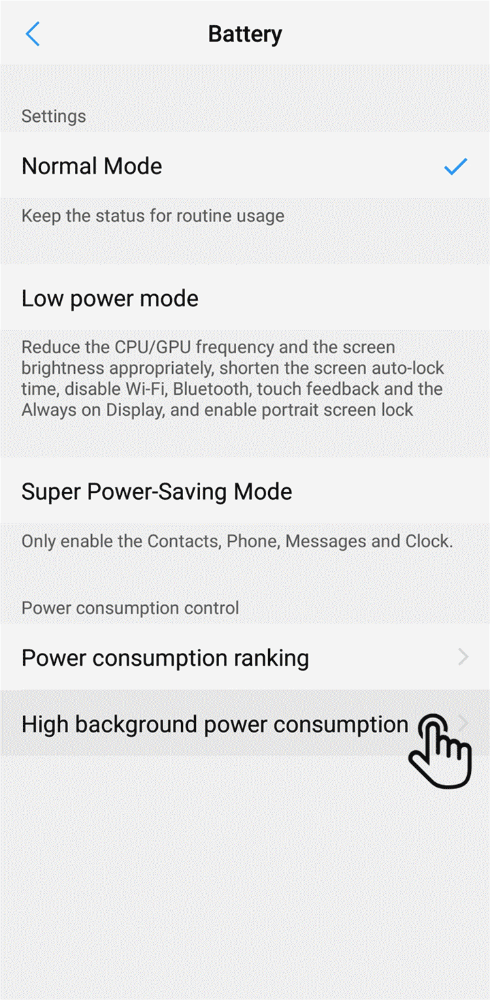
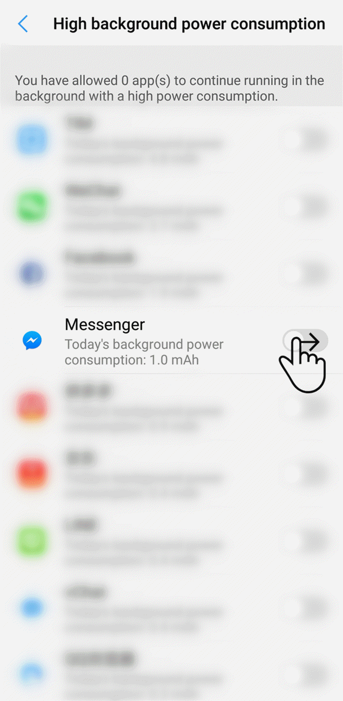

Vivo
Funtouch OS 12
1. Allow the app to auto-start
   
2. Allow the app to have high backsground power consumption
  
3. Pin the app
To avoid app being killed (when pressing
Speed up
button)
Your browser does not support the video tag.